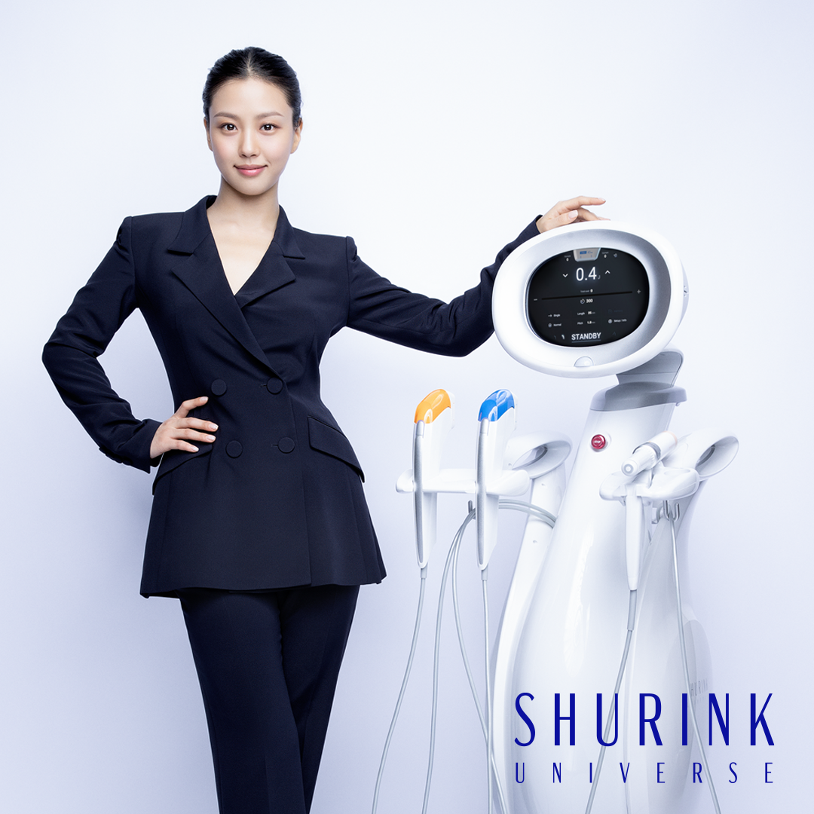

Процедура Шуринк
достаточно эффективна для подтяжки лица. После процедуры не остается шрамов или следов, поэтому ее предпочитает широкая возрастная группа людей от 20 до 60 лет. Тогда в чем принцип процедуры Шуринк и как сохранить эффект надолго? - Каков принцип процедуры Шуринк? Принцип Шуринк заключается в глубоком повреждении кожи ультразвуком с целью появления реакции регенерации. Это процедура, от которой можно ожидать лифтингового эффекта за счет феномена сокращения кожной фасции и регенерации коллагена. - Какой эффект возникает после процедуры Шуринк? Создает эффект лифтинга без следов и шрамов, доставая энергию из глубины кожи. Процедура Шуринк эффективна, если кожа провисает из-за фасции или жира. - Что делать, чтобы сохранить эффект после процедуры в течение длительного времени? Поддержание веса важно для долгосрочного эффекта процедуры. Значительное изменение веса считается при возникновении изменений более чем на 5% от исходного веса. В частности, увеличение веса часто приводит к потере эластичности кожи. Для женщин изменение порядка 1-2 кг является естественным явлением из-за ежемесячных гормональных изменений. Поэтому, если предотвращать прибавку в весе от 3 кг и более, можно сохранить эффект процедуры на долгое время. - Каковы меры предосторожности после процедуры Шуринк? Многие думают, что мер предосторожности не так много, потому что после процедуры на лице остается не так много следов. Однако интенсивные физические упражнения, горячие компрессы и посещение сауны, вызывающие ощущение тепла на лице, могут вызвать отек или кровоподтеки. Поэтому следует соблюдать осторожность в течение недели после процедуры. - Какие побочные эффекты могут возникнуть после процедуры Шуринк? Поскольку энергия уходит глубоко в кожу, жировой слой может временно атрофироваться. Поэтому необходимо быть осторожным при выборе области воздействия, поскольку может временно лицо будет выглядеть так, как будто сильно осунулось. Еще одним побочным эффектом является временное сдавливание нервов, что может вызвать потерю чувствительности. Но сама процедура не повреждает нерв, она вызывает сдавливание нерва по мере восстановления области воздействия. В этом случае со временем чувствительность восстановится. Если вы хотите пройти процедуру Шуринк на область, подвергшейся лечению филлерами или имплантатами, то нужно быть более внимательными и осторожными и на консультации обязательно сказать об этом врачу.
